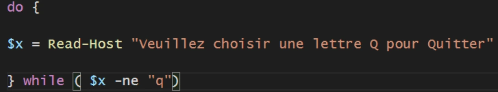
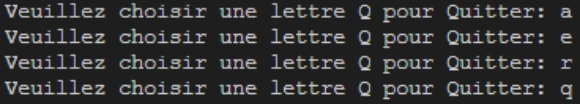
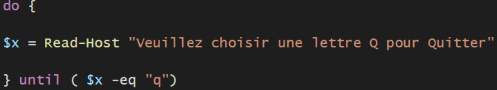
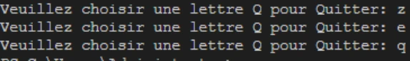
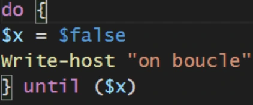
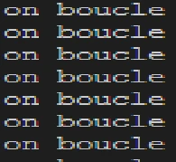
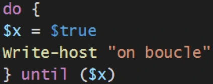
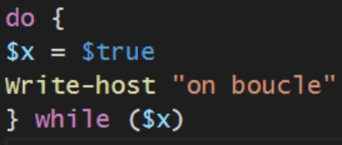
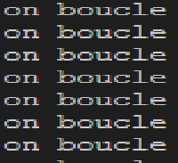
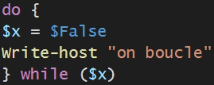

Transcription du support du Drive. Les formulations historiques et les exemples du document sont conservés. Les valeurs d’accès du laboratoire sont indiquées comme « fourni par le formateur ». Les adresses de messagerie personnelles utilisent example.com.
Démonstration 06 du module 4
La boucle nécessite une valeur de variable à tester pour commencer à boucler. Cela est parfois impossible car la variable à tester peut-être déclarée à l’intérieur même de la boucle.
L’objectif de cette démonstration est de montrer que la boucle Do-While permet un tour de
boucle initiale sans condition. La condition sera faite en sortie de boucle et, en fonction de la
réponse, d’autres tours de boucle (ou aucun) seront effectués.Pour le Do-until, le sens est inversé au niveau de la condition : on boucle tant que le test répond « Faux ».



Pour bien différencier les deux structures, il faut penser à certains types de tests qui ne peuvent pas être inversés par des opérateurs de comparaison comme les booléens.
Dans le premier cas $x est égale à $False. Until boucle à l’infini. Dans le second cas, Until ne boucle pas.
Nous avons le comportement inverse avec While





